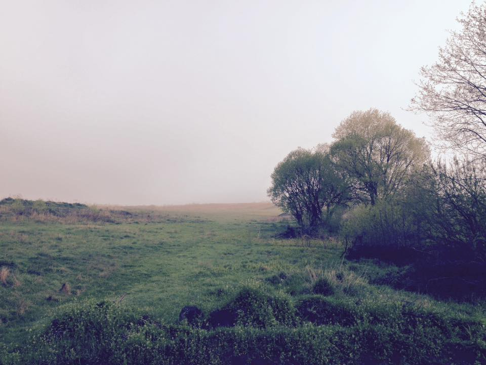

Date of birth: on October, 5, 1985
Address : 81130, Ukraine, Sokiljnyky
Shevchenko street, 38
tel.: 063 560 01 73
e-mail: ulyana.kutsir@gmail.com
Date of birth: on October, 5, 1985
Address : 81130, Ukraine, Sokiljnyky
Shevchenko street, 38
tel.: 063 560 01 73
e-mail: ulyana.kutsir@gmail.com
09/2007-06/2008 - I. Franko National University of Lviv, Law faculty, LLM
06/2008 - the master's degree of jurisprudence;
Master's degree work: «Corporate rights of shareholders», scientific curator - candidate of legal sciences Cikalo V.;
09/2003-06/2007 - I. Franko National University of Lviv, Law faculty, LLB
2003 - advanced study: «Features of criminal responsibility of minor», a scientific curator - candidate of legal sciences Burdin V.;
2007 - advanced study: «Regional guarantees of minor's labour protection», scientific curator - candidate of legal sciences Kozak Z.
06/2014 – 11/2015 - lawyer in corporate, civil, labor, tax, employment cases in Public Company “Zahidenergoavtomatyka”:
02/2015 - Attorney-at-law license.
01/2013 - Head of the legal advisory «Native Javorivshchyna», main responsibilities:
05/2012 - lawyer in corporate, civil cases in Private Enterprise “Leleka”, main responsibilities:
05/2010 – assistant of private notary of Lviv notarial district Popovych G.I, legal consultant, main responsibilities:
09/2005 – 06/2006 – member of public organization «Motherland is young» in Lviv;
09/2006 – 06/2008 – participant of theatrical group of I. Franko National University of Lviv;
09/2006 – 06/2007 – participant of community theatre «Apart», Lviv;
10/2007 until now – member of public organization “Christian - Democratic Union of young People”
01/2009 until now – member of public organization «Elucidative union», one of the founderes and Chairman of public organization «Elucidative union».
I was born in the village of Sokilnyky not far from Lviv.
My first social work began with the organization
Prosvitnycka spilka when i was 14. After that i desided
to be a lawyer to defend the rights of people.
Most of all I'm interested in Art, photography and rules
between people which are by them generated.
Also I have a great desire to understand the world of Information technology
and management as it is the future of our society! And to become a good programist.
So, have a nice time and contact for legal aid:)
My number is: +380635600173
You can also write me on my email:ulyana.kutsir@gmail.com
Or leave information on this form:
Social work